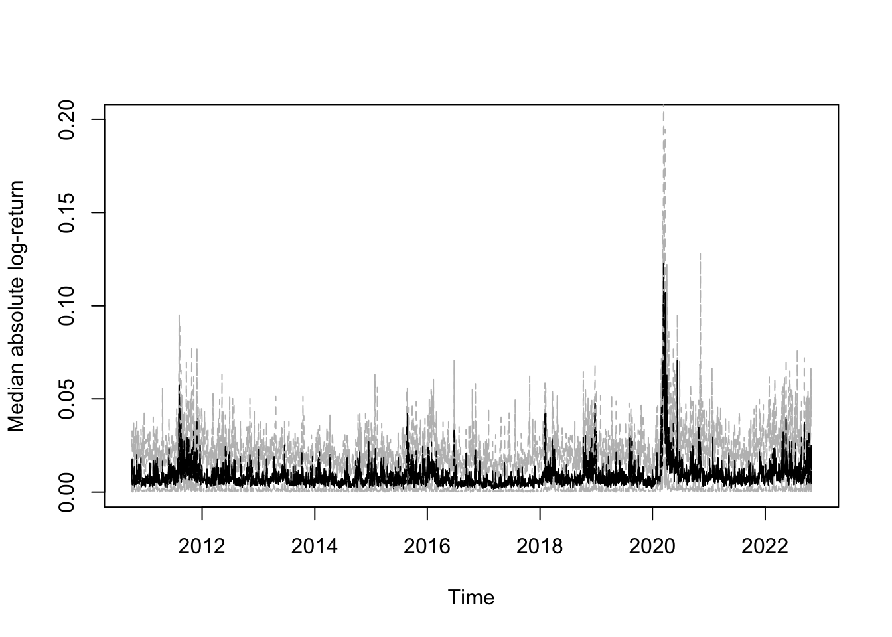

Network log-ARCH models for forecasting stock market volatility
Author
Raffaele Mattera, Philipp Otto
Network log-ARCH models for forecasting stock market volatility
Code used in:
Network log-ARCH models for forecasting stock market volatility (arXiv:xxxx.xxxxx)
Raffaele Mattera, Philipp Otto
Abstract
This paper presents a novel dynamic network autoregressive conditional heteroscedasticity (ARCH) model based on spatiotemporal ARCH models to forecast volatility in the US stock market. To improve the forecasting accuracy, the model integrates temporally lagged volatility information and information from adjacent nodes, which may instantaneously spill across the entire network. The model is also suitable for high-dimensional cases where multivariate ARCH models are typically no longer applicable. We adopt the theoretical foundations from spatiotemporal statistics and transfer the dynamic ARCH model for processes to networks. This new approach is compared with independent univariate log-ARCH models. We could quantify the improvements due to the instantaneous network ARCH effects, which are studied for the first time in this paper. The edges are determined based on various distance and correlation measures between the time series. The performances of the alternative networks’ definitions are compared in terms of out-of-sample accuracy. Furthermore, we consider ensemble forecasts based on different network definitions.
Model
The new dynamic network log-ARCH model is based on dynamic spatiotemporal ARCH models proposed by . As for the univariate log-ARCH models, the observed process is given by \[\begin{align}
Y_{t}(s_i) & = \sqrt{h_{t}(s_i)} \varepsilon_{t}(s_i), \label{eq:network_arch_Y}
\end{align}\] but now \(h_{t}(s_i)\) is being influenced by past observations at the same node, \(Y_{t-1}(s_i)\), and simultaneously by the adjacent observations at the same time point, \(\{Y_{t}(s_j) : j \in E_i \}\), where \(E_i\) is the subset of edges with links to node \(s_i\). Let \(\boldsymbol{h}^*_t = (\ln h^2_t(s_1), \ldots, \ln h^2_t(s_n))'\) and \(\boldsymbol{Y}^*_t = (\ln Y^2_t(s_1), \ldots, \ln Y^2_t(s_n))'\). Then, the network log-ARCH process of order one can be written as follows \[\begin{align}
\boldsymbol{h}^*_t = \boldsymbol{\omega} + \mathbf{\Gamma} \boldsymbol{Y}^*_{t-1} + \rho \mathbf{W} \boldsymbol{Y}^*_t \, , \label{eq:network_arch_h}
\end{align}\] where \(\mathbf{W} = (w_{ij})_{i,j = 1, \ldots, n}\) is a matrix of edge weights, which define the relative degree of the volatility spillovers, \(\rho\) is an unknown parameter for these instantaneous network interactions, \(\mathbf{\Gamma} = \text{diag}(\gamma_1, \ldots, \gamma_n)'\) is a diagonal matrix of stock-specific temporal ARCH effects, and \(\boldsymbol{\omega} = (\omega_1, \ldots, \omega_n)'\) is the constant term. The matrix of edge weights \(\mathbf{W}\) is analogously specified as the spatial weight matrix in spatial econometrics. That is, the diagonal entries are supposed to be zero (i.e., no self-loops), the matrix is non-stochastic, and uniformly bounded in row and column sums in absolute terms. The latter assumption is needed to limit the network interactions to a constant degree when the number of nodes \(n\) is increasing. Typical choices are inverse-distance matrices (e.g., for road networks) or \(k\)-nearest neighbours matrices, where the proximity is defined by any network characteristic. We will discuss the definition of \(\mathbf{W}\) in more detail below.
Functions for GMM estimation
Note that the examples showing how the functions can be used are in the next section.
Show the functions needed for the GMM estimator of the network log-ARCH model
GMM_SDPD_2SLS_ARCH_ind_timelags <-function(Y, X, W, info){ ksy = info$ksy # spatial exapansion order of y ksx = info$ksx # spatial exapansion order of xif(is.null(Y)){stop("Y is missing") }# if(is.null(X)){# stop("X is missing")# }if(is.null(W)){stop("W is missing") }if(is.null(info)){stop("info is missing") } dimW <-dim(W) n <- dimW[1]if(length(dimW) ==2){ p <-1 new.W <-array(, dim =c(n,n,p)) new.W[,,1] <- W W <- new.W } else { p <- dimW[3] }if(length(dimW) >3| dimW[1] != dimW[2] | dimW[2] != n){stop("Check W matrix (W must be of dimension n x n x p)") }if(dim(Y)[1] != n |length(dim(Y)) !=2){stop("Y should be a matrix of dimension n x T") } t <-dim(Y)[2] -1# cat("Number of cross-sectional units:", n, "\n")# cat("Length of the time series:", t, "\n")# cat("Number of spatial lags (weight matrices):", p, "\n") s <- t -1 nt <- n * t ns <- n * s yt <-as.vector(Y[, 2:(t+1)]) ytlv <-as.vector(Y[, 1:(t)]) # ytl vector ytl <-array(0, dim =c(nt,n)) # ytl matrix to get individual temporal coefficients ysl <-array(0, dim =c(nt,p)) ystl <-array(0, dim =c(nt,p))for(i in1:n){ ytl[seq(1, nt, by = n) + i -1, i] <- Y[i, 1:(t)] }for(i in1:t){for(j in1:p){ ysl[(1+(i-1)*n):(i*n), j] <- W[,,j] %*% yt[(1+(i-1)*n):(i*n)]; ystl[(1+(i-1)*n):(i*n), j] <- W[,,j] %*% ytlv[(1+(i-1)*n):(i*n)]; } }if(info$stl + info$tl ==2){ xw <-cbind(ytl, ystl); } elseif (info$stl + info$tl ==1){if(info$stl ==1){ xw <- ystl } else { xw <- ytl } } elseif (info$stl + info$tl ==0){stop("No spatial and no temporal lag given") } else {stop("Double-Check stl & tl # in Info structure") } X_stacked <-NULL W1hx <-NULL MHX <-NULLif(!is.null(X)){for(i in1:t){ X_stacked <-rbind(X_stacked, X[,i+1,]) }if(dim(X)[3] ==1){ X_stacked <-array(X_stacked, dim =c(length(X_stacked), 1)) } } xs <- X_stacked; xt <-cbind(xw, xs); zt <-cbind(ysl, xt); kz <-dim(zt)[2] kx <-dim(xt)[2] kxs <-dim(xs)[2] kxw <-dim(xw)[2] c <-sqrt((t-(1:s))/(t-(1:s)+1)); F <-diag(t) F <- F[, 1:(t-1)]for(i in1:(t-1)){ F[(i+1):t, i] <--1/(t-i); F[, i] <- c[i] * F[,i]; } hyt <-array(yt, dim =c(n,t)); hyt <- hyt %*% F; hyt <-as.vector(hyt); hytlv <-array(ytlv, dim =c(n,t)); hytlv <- hytlv %*% F; hytlv <-as.vector(hytlv); hytl <-array(0, dim =c(ns,n)) # hytl matrix to get individual temporal coefficientsfor(i in1:n){ hytl[seq(1, ns, by = n) + i -1, i] <-array(hytlv, dim =c(n,s))[i, ] } hysl <-array(ysl, dim =c(n,t,p)); hysltemp <-array(0, dim =c(n,t-1,p));for(i in1:p){ hysltemp[,,i] <- hysl[,,i] %*% F; } hysl <-array(hysltemp, dim =c(ns,p)); hystl <-array(ystl, dim =c(n,t,p)); hystltemp <-array(0, dim =c(n,t-1,p));for(i in1:p){ hystltemp[,,i] <- hystl[,,i] %*% F; } hystl <-array(hystltemp, dim =c(ns,p));if(!is.null(X_stacked)){ kx <-dim(X_stacked)[2] hx <-array(X_stacked, dim =c(n,t,kx)); hxtemp <-array(0, dim =c(n,t-1,kx));for(i in1:kx){ hxtemp[,,i] <- hx[,,i] %*% F; } hx <-array(hxtemp, dim =c(ns,kx)); } else { hx <-NULL }if(info$stl + info$tl ==2){ hxw <-cbind(hytl, hystl); } elseif(info$stl + info$tl ==1){if(info$stl ==1){ hxw <- hystl } else { hxw <- hytl } } elseif(info$stl + info$tl ==0){stop("no spatial and temporal lag given, check suitability") } else {stop("Doube-check info$stl and info$tl") } pyid <-array(0, dim =c(ksy,2)); pa <-1 pb <- p pyid[1,] <-c(pa, pb);for(k in2:ksy){ pa <- pa + p^(k-1) pb <- pb + p^k pyid[k,] <-c(pa, pb); } WY <-array(0, dim =c(nt, pyid[ksy,2])); WY[, 1:p] = ystlfor(i in1:t){for(k in1:(ksy-1)){for(j in1:p){ WY[(1+(i-1)*n):(i*n), (pyid[k,2] +1+ (j-1)*p^k):(pyid[k,2]+j*p^k)] <- W[,,j] %*% WY[(1+(i-1)*n):(i*n), pyid[k,1]:pyid[k,2]]; } } }if(!is.null(X_stacked)){ kx <-dim(X_stacked)[2] W1hx <-array(0, dim =c(ns,kx*p))for(i in1:s){for(j in1:p){ W1hx[(1+(i-1)*n):(i*n), (1+(j-1)*kx):(j*kx)] <- W[,,j] %*% hx[(1+(i-1)*n):(i*n),]; } } pxid <-array(0, dim =c(ksx,2)) pa <-1 pb <- p*kx pxid[1,] <-c(pa, pb);for(k in2:ksx){ pa <- pa + p^(k-1)*kx pb <- pb + p^k*kx pxid[k,] <-c(pa, pb); } WHX <-array(0, dim =c(ns, pxid[ksx,2]*kx)) WHX[,1:(p*kx)] <- W1hx;for(i in1:s){for(k in1:(ksx-1)){for(j in1:p){ WHX[(1+(i-1)*n):(i*n), (pxid[k,2]+1+(j-1)*p^k*kx):(pxid[k,2]+j*p^k*kx)] <- W[,,j] %*% WHX[(1+(i-1)*n):(i*n), pxid[k,1]:pxid[k,2]]; } } } }## Following is the IV without interaction term pyid <-array(0, dim =c(ksy,2)); pa <-1; pb <- p; pyid[1,] <-c(pa, pb);for(k in2:ksy){ pa <- pa + p pb <- pb + p pyid[k,] <-c(pa, pb) } MY <-array(0, dim =c(nt, pyid[ksy,2])) MY[,1:p] <- ystl;for(i in1:t){for(k in1:(ksy-1)){for(j in1:p){ MY[(1+(i-1)*n):(i*n), (pyid[k,2]+j):(pyid[k,2]+j)] <- W[,,j] %*% MY[(1+(i-1)*n):(i*n), (pyid[k,1]-1+j):(pyid[k,1]-1+j)]; } } }if(!is.null(X_stacked)){ kx <-dim(X_stacked)[2] pxid <-array(0, dim =c(ksx,2)) pa <-1 pb <- p*kx pxid[1,] <-c(pa, pb)for(k in2:ksx){ pa <- pa + p*kx pb <- pb + p*kx pxid[k, ] <-c(pa, pb) } MHX <-array(0, dim =c(ns,pyid[ksx,2]*kx)); MHX[,1:(p*kx)] <- W1hx;for(i in1:s){for(k in1:(ksx-1)){for(j in1:p){ MHX[(1+(i-1)*n):(i*n),(pxid[k,2]+1+(j-1)*kx):(pxid[k,2]+j*kx)] <- W[,,j] %*% MHX[(1+(i-1)*n):(i*n),(pxid[k,1]+(j-1)*kx):(pxid[k,1]-1+j*kx)]; } } } } Qw <-cbind(ytl, WY); Qw_alt <-cbind(ytl, MY);if(ksx ==0){ Qs <-NULL Qs_alt <-NULL qs <-0 qs_alt <-0 } else { Qs <-cbind(hx, W1hx) Qs_alt <-cbind(hx, MHX) qs <-dim(Qs)[2] qs_slt <-dim(Qs_alt)[2] } Qw <- Qw[1:ns,] Qw_alt <- Qw_alt[1:ns,] qw <-dim(Qw)[2] qw_alt <-dim(Qw_alt)[2] Q <-cbind(Qw, Qs) Q_alt <-cbind(Qw_alt, Qs_alt) kq <-dim(Q)[2] kq_alt <-dim(Q_alt)[2] hxs <- hx hxt <-cbind(hxw, hxs) hzt <-cbind(hysl, hxt) Qhz <-array(0, dim =c(kq, kz)) QQ <-array(0, dim =c(kq, kq)) Qhy <-array(0, dim =c(kq, 1)) Qhz_alt <-array(0, dim =c(kq_alt, kz)) QQ_alt <-array(0, dim =c(kq_alt, kq_alt)) Qhy_alt <-array(0, dim =c(kq_alt, 1)) Jn <-diag(n) -array(1/n, dim =c(n,n));for(i in1:s){if(info$ted ==1){ Qhz <- Qhz +t(Q[(1+(i-1)*n):(i*n),]) %*% Jn %*% hzt[(1+(i-1)*n):(i*n),]; QQ <- QQ +t(Q[(1+(i-1)*n):(i*n),]) %*% Jn %*% Q[(1+(i-1)*n):(i*n),]; Qhy <- Qhy +t(Q[(1+(i-1)*n):(i*n),]) %*% Jn %*% hyt[(1+(i-1)*n):(i*n)]; Qhz_alt <- Qhz_alt +t(Q_alt[(1+(i-1)*n):(i*n),]) %*% Jn %*% hzt[(1+(i-1)*n):(i*n),]; QQ_alt <- QQ_alt +t(Q_alt[(1+(i-1)*n):(i*n),]) %*% Jn %*% Q_alt[(1+(i-1)*n):(i*n),]; Qhy_alt <- Qhy_alt +t(Q_alt[(1+(i-1)*n):(i*n),]) %*% Jn %*% hyt[(1+(i-1)*n):(i*n)]; } else { Qhz <- Qhz +t(Q[(1+(i-1)*n):(i*n),]) %*% hzt[(1+(i-1)*n):(i*n),]; QQ <- QQ +t(Q[(1+(i-1)*n):(i*n),]) %*% Q[(1+(i-1)*n):(i*n),]; Qhy <- Qhy +t(Q[(1+(i-1)*n):(i*n),]) %*% hyt[(1+(i-1)*n):(i*n)]; Qhz_alt <- Qhz_alt +t(Q_alt[(1+(i-1)*n):(i*n),]) %*% hzt[(1+(i-1)*n):(i*n),]; QQ_alt <- QQ_alt +t(Q_alt[(1+(i-1)*n):(i*n),]) %*% Q_alt[(1+(i-1)*n):(i*n),]; Qhy_alt <- Qhy_alt +t(Q_alt[(1+(i-1)*n):(i*n),]) %*% hyt[(1+(i-1)*n):(i*n)]; } } theta <-mldivide(t(Qhz) %*%ginv(QQ) %*% Qhz, t(Qhz) %*%ginv(QQ) %*% Qhy); theta_alt <-mldivide(t(Qhz_alt) %*%ginv(QQ_alt) %*% Qhz_alt, t(Qhz_alt) %*%ginv(QQ_alt) %*% Qhy_alt); e <- hyt - hzt %*% theta; e_alt <- hyt - hzt %*% theta_alt;if(info$ted ==1){for(i in1:s){ e[(1+(i-1)*n):(i*n)] <- Jn %*% e[(1+(i-1)*n):(i*n)]; e_alt[(1+(i-1)*n):(i*n)] <- Jn %*% e_alt[(1+(i-1)*n):(i*n)]; } } sigma2 <-mean((e-mean(e))^2); sigma4 <-mean((e-mean(e))^4); sigma2_alt <-mean((e_alt-mean(e_alt))^2); sigma4_alt <-mean((e_alt-mean(e_alt))^4); lambda <- theta[1:p]; delta <- theta[(p+1):kz]; lambda_alt <- theta_alt[1:p]; delta_alt <- theta_alt[p+1:kz]; lambdaW <-array(0, dim =c(n,n)); lambdaW_alt <-array(0, dim =c(n,n));for(j in1:p){ lambdaW <- lambdaW + lambda[j] * W[,,j]; lambdaW_alt <- lambdaW_alt + lambda_alt[j] * W[,,j]; } Sn <-diag(n) - lambdaW; Sn_alt <-diag(n) - lambdaW_alt; DSiD <-1/(sigma2*ns) *t(Qhz) %*%ginv(QQ) %*% Qhz; DSiD_alt <-1/(sigma2_alt*ns) *t(Qhz_alt) %*%ginv(QQ_alt) %*% Qhz_alt; SIG <-tryCatch(1/ns *solve(DSiD), error =function(e){cat("DSiD not invertible \n"); return(array(NA, dim =dim(DSiD)))})# SIG <- 1/ns * solve(DSiD); std <-sqrt(abs(diag(SIG))); tstat <- theta/std; SIG_alt <-tryCatch(1/ns *solve(DSiD_alt), error =function(e){cat("DSiD_alt not invertible \n"); return(array(NA, dim =dim(DSiD_alt)))})# SIG_alt <- 1/ns * solve(DSiD_alt); std_alt <-sqrt(abs(diag(SIG_alt))); tstat_alt <- theta_alt/std_alt; results <-list(theta = theta, std = std, SIG = SIG, tstat = tstat, sigma2 = sigma2,theta_alt = theta_alt, std_alt = std_alt, SIG_alt = SIG_alt, tstat_alt = tstat_alt, sigma2_alt = sigma2_alt,e =array(e, dim =c(n, t)), e_alt =array(e_alt, dim =c(n, t)), hyt =array(hyt, dim =c(n, t)))return(results)}mldivide <-function(A, b){return(ginv(t(A) %*% A) %*%t(A) %*% b)# return(qr.solve(A, b))}
Download data set
For the empirical experiment, we consider a forecasting experiment on the stocks included in the Dow Jones Industrial Average Index. We excluded stocks showing missing values. The daily time series span from October 1, 2010, to October 31, 2022.
Warning: `BatchGetSymbols()` was deprecated in BatchGetSymbols 2.6.4.
ℹ Please use `yfR::yf_get()` instead.
ℹ 2022-05-01: Package BatchGetSymbols will soon be replaced by yfR. More
details about the change is available at github
<<www.github.com/msperlin/yfR> You can install yfR by executing:
remotes::install_github('msperlin/yfR')
Running BatchGetSymbols for:
tickers =PG, MMM, IBM, MRK, AXP, MCD, BA, KO, CAT, DIS, JPM, JNJ, WMT, HD, INTC, MSFT, VZ, CVX, CSCO, TRV, UNH, GS, NKE, V, AAPL, WBA, DOW, AMGN, HON, CRM
Downloading data for benchmark ticker
^GSPC | yahoo (1|1) | Not Cached | Saving cache
PG | yahoo (1|30) | Not Cached | Saving cache - Got 100% of valid prices | Good stuff!
MMM | yahoo (2|30) | Not Cached | Saving cache - Got 100% of valid prices | Looking good!
IBM | yahoo (3|30) | Not Cached | Saving cache - Got 100% of valid prices | You got it!
MRK | yahoo (4|30) | Not Cached | Saving cache - Got 100% of valid prices | You got it!
AXP | yahoo (5|30) | Not Cached | Saving cache - Got 100% of valid prices | Good job!
MCD | yahoo (6|30) | Not Cached | Saving cache - Got 100% of valid prices | Good stuff!
BA | yahoo (7|30) | Not Cached | Saving cache - Got 100% of valid prices | Got it!
KO | yahoo (8|30) | Not Cached | Saving cache - Got 100% of valid prices | Nice!
CAT | yahoo (9|30) | Not Cached | Saving cache - Got 100% of valid prices | Nice!
DIS | yahoo (10|30) | Not Cached | Saving cache - Got 100% of valid prices | Well done!
JPM | yahoo (11|30) | Not Cached | Saving cache - Got 100% of valid prices | Looking good!
JNJ | yahoo (12|30) | Not Cached | Saving cache - Got 100% of valid prices | Good job!
WMT | yahoo (13|30) | Not Cached | Saving cache - Got 100% of valid prices | OK!
HD | yahoo (14|30) | Not Cached | Saving cache - Got 100% of valid prices | Nice!
INTC | yahoo (15|30) | Not Cached | Saving cache - Got 100% of valid prices | Nice!
MSFT | yahoo (16|30) | Not Cached | Saving cache - Got 100% of valid prices | Looking good!
VZ | yahoo (17|30) | Not Cached | Saving cache - Got 100% of valid prices | You got it!
CVX | yahoo (18|30) | Not Cached | Saving cache - Got 100% of valid prices | Well done!
CSCO | yahoo (19|30) | Not Cached | Saving cache - Got 100% of valid prices | Looking good!
TRV | yahoo (20|30) | Not Cached | Saving cache - Got 100% of valid prices | Nice!
UNH | yahoo (21|30) | Not Cached | Saving cache - Got 100% of valid prices | Feels good!
GS | yahoo (22|30) | Not Cached | Saving cache - Got 100% of valid prices | Got it!
NKE | yahoo (23|30) | Not Cached | Saving cache - Got 100% of valid prices | Looking good!
V | yahoo (24|30) | Not Cached | Saving cache - Got 100% of valid prices | Good job!
AAPL | yahoo (25|30) | Not Cached | Saving cache - Got 100% of valid prices | OK!
WBA | yahoo (26|30) | Not Cached | Saving cache - Got 100% of valid prices | Well done!
DOW | yahoo (27|30) | Not Cached | Saving cache - Got 30% of valid prices | OUT: not enough data (thresh.bad.data = 100%)
AMGN | yahoo (28|30) | Not Cached | Saving cache - Got 100% of valid prices | Good stuff!
HON | yahoo (29|30) | Not Cached | Saving cache - Got 100% of valid prices | Good stuff!
CRM | yahoo (30|30) | Not Cached | Saving cache - Got 100% of valid prices | Looking good!
export(l.out,"l.out.RDS")Datar <-unstack(l.out$df.tickers, l.out$df.tickers$ret.adjusted.prices~l.out$df.tickers$ticker)Datar <- Datar[-1,]# Split train and testing:train.l <-2540# We leave out 500 observations for testing# Adjust data in a proper way (for OOS error computation and spatio-temporal log ARCH)logDatar2 <- Datarfor (i in1:ncol(Datar)) { logDatar2[,i] <-ifelse(Datar[,i]==0, log(min(Datar[Datar[,i]!=0,i]^2)), log(Datar[,i]^2)) }# Define quantities for OOS forecasting:out.l <-nrow(Datar) - train.l # Out of sample length
Median (solid line) and the 5% and 95% quantiles of the absolute log-returns to depict the temporally varying volatility.
plot(as.Date(l.out$df.tickers$ref.date[1:length(Datar[,1])]), apply(abs(Datar), 1, median), type ="l", xlab ="Time", ylab ="Median absolute log-return", ylim =c(0, 0.2))lines(as.Date(l.out$df.tickers$ref.date[1:length(Datar[,1])]),apply(abs(Datar), 1, quantile, 0.95), lty =2, col ="grey")lines(as.Date(l.out$df.tickers$ref.date[1:length(Datar[,1])]),apply(abs(Datar), 1, quantile, 0.05), lty =2, col ="grey")lines(as.Date(l.out$df.tickers$ref.date[1:length(Datar[,1])]),apply(abs(Datar), 1, quantile, 0.5), lty =2, col ="black")

Network defintions
# Construct the W matrix: Approach 1# Alternative A: standard Euclidean distanceWmat1 <-as.matrix(diss(t(Datar[1:train.l,]), "EUCL"))Wmat1 <-1/Wmat1diag(Wmat1) <-0Wmat1 <- Wmat1 /max(eigen(Wmat1, only.values =TRUE)$values)# Alternative B: correlation-based distanceWmat2 <-as.matrix(diss(t(Datar[1:train.l,]), "COR"))Wmat2 <-1/Wmat2diag(Wmat2) <-0Wmat2 <- Wmat2 /max(eigen(Wmat2, only.values =TRUE)$values)# Alternative C: log-ARCH approachWmat3 <-as.matrix(diss(t(logDatar2[1:train.l,]), "AR.PIC"))Wmat3 <-1/Wmat3diag(Wmat3) <-0Wmat3 <- Wmat3 /max(eigen(Wmat3, only.values =TRUE)$values)# Approach 2: k-nearest neighbours# Alternative A: standard Euclidean distancedist_mat <-as.matrix(diss(t(Datar[1:train.l,]), "EUCL"))k <-2# Choose 3, 5 or 10Wmat1_3 <-t(sapply(1:ncol(dist_mat), function(i) ifelse(dist_mat[i,] <sort(dist_mat[i,])[k+2] & dist_mat[i,] >0, 1/k, 0))) # k+2, because of the diagonal zero entry and the strict inequalitydiag(Wmat1_3) <-0k <-3# Choose 3, 5 or 10Wmat1_5 <-t(sapply(1:ncol(dist_mat), function(i) ifelse(dist_mat[i,] <sort(dist_mat[i,])[k+2] & dist_mat[i,] >0, 1/k, 0))) # k+2, because of the diagonal zero entry and the strict inequalitydiag(Wmat1_5) <-0k <-5# Choose 3, 5 or 10Wmat1_10 <-t(sapply(1:ncol(dist_mat), function(i) ifelse(dist_mat[i,] <sort(dist_mat[i,])[k+2] & dist_mat[i,] >0, 1/k, 0))) # k+2, because of the diagonal zero entry and the strict inequalitydiag(Wmat1_10) <-0# Alternative B: correlation-based distancedist_mat <-as.matrix(diss(t(Datar[1:train.l,]), "COR"))k <-2# Choose 3, 5 or 10Wmat2_3 <-t(sapply(1:ncol(dist_mat), function(i) ifelse(dist_mat[i,] <sort(dist_mat[i,])[k+2] & dist_mat[i,] >0, 1/k, 0))) # k+2, because of the diagonal zero entry and the strict inequalitydiag(Wmat2_3) <-0k <-3# Choose 3, 5 or 10Wmat2_5 <-t(sapply(1:ncol(dist_mat), function(i) ifelse(dist_mat[i,] <sort(dist_mat[i,])[k+2] & dist_mat[i,] >0, 1/k, 0))) # k+2, because of the diagonal zero entry and the strict inequalitydiag(Wmat2_5) <-0k <-5# Choose 3, 5 or 10Wmat2_10 <-t(sapply(1:ncol(dist_mat), function(i) ifelse(dist_mat[i,] <sort(dist_mat[i,])[k+2] & dist_mat[i,] >0, 1/k, 0))) # k+2, because of the diagonal zero entry and the strict inequalitydiag(Wmat2_10) <-0# Alternative C: log-ARCH approachdist_mat <-as.matrix(diss(t(logDatar2[1:train.l,]), "AR.PIC"))k <-2# Choose 3, 5 or 10Wmat3_3 <-t(sapply(1:ncol(dist_mat), function(i) ifelse(dist_mat[i,] <sort(dist_mat[i,])[k+2] & dist_mat[i,] >0, 1/k, 0))) # k+2, because of the diagonal zero entry and the strict inequalitydiag(Wmat3_3) <-0k <-3# Choose 3, 5 or 10Wmat3_5 <-t(sapply(1:ncol(dist_mat), function(i) ifelse(dist_mat[i,] <sort(dist_mat[i,])[k+2] & dist_mat[i,] >0, 1/k, 0))) # k+2, because of the diagonal zero entry and the strict inequalitydiag(Wmat3_5) <-0k <-5# Choose 3, 5 or 10Wmat3_10 <-t(sapply(1:ncol(dist_mat), function(i) ifelse(dist_mat[i,] <sort(dist_mat[i,])[k+2] & dist_mat[i,] >0, 1/k, 0))) # k+2, because of the diagonal zero entry and the strict inequalitydiag(Wmat3_10) <-0
Network plots
library("igraph")
Attaching package: 'igraph'
The following objects are masked from 'package:dplyr':
as_data_frame, groups, union
The following objects are masked from 'package:stats':
decompose, spectrum
The following object is masked from 'package:base':
union
Below, we show the estimation of one (arbitrarily selected) network definition (i.e., Wmat1), but the weight matrix can easily be exchanged by the alternative definitions.